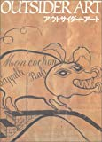
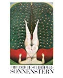
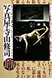
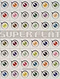
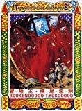

FAVORITES
美術書
OUTSIDER ART アウトサイダーアート
専門的な教育を受けず、自らのわき上がる衝動から自分のためだけに描いた人たちをアウトサイダーという。
狂気。狂気の人は画面を埋める傾向にある。
あとやっぱり、ヘンリーダガーは突き抜けている。
この本では、フルカラーで何人もの作品を見ることができお得。

posted with amazlet at 09.10.25
求龍堂
売り上げランキング: 53731
おすすめ度の平均:


ヘタウマ？

天才と狂気は紙一重と言うが......

本来のアート
本来のアート

アウトサイダーアートの感想
F.S-ゾンネンシュターン 〔骰子の7の目 シュルレアリスムと画家叢書〕
僕の最も好きな画家、変態王ゾンネンシュターン。
どんな作家なのかはこのリンクを見ていただきたい。
エロティックで背徳的でユーモラス。
この画集は日本で手に入るほとんど唯一のゾンネンシュターンの画集であり、図版が多く鮮明である。
絶版になる前に買っておいた方がいい。

F.S-ゾンネンシュターン 〔骰子の7の目 シュルレアリスムと画家叢書〕
posted with amazlet at 09.10.25
種村 季弘
河出書房新社
売り上げランキング: 432802
春画 江戸の絵師四十八人（別冊太陽）
江戸初期から後期に描かれた春画を掲載。北斎の有名作品から隠れた名作まで。
美しく艶やかな絵から江戸時代の粋を感じられる。
春画入門書の決定版といってもいいだろう。
posted with amazlet at 09.10.25
平凡社
売り上げランキング: 5746
写真屋・寺山修司―摩訶不思議なファインダー
虚に魅せられた男、寺山修司が造った偽の世界。
寺山修司は語る「写真は”真を写す”のではなく。”偽を造る”のだ。」と。
添えられた寺山修司の詩もまたよい。

posted with amazlet at 09.10.25
田中 未知
フィルムアート社
売り上げランキング: 40357
おすすめ度の平均:


世界観に惹き込まれていく
スーパーフラット 村上隆編纂
日本の古典絵画と現在のアニメ的絵画を並列し、日本絵画に「スーパーフラット」という概念が潮流として流れていることを提示している。
全頁ハズレなしの贅沢な画集。
若冲も奈良美智も宗達も村上隆も北斎も変丸もみんな同じ系譜にいるのだってことが分かる。

posted with amazlet at 09.10.26
マドラ出版
売り上げランキング: 133549
冒険王・横尾忠則
日本を代表する芸術家横尾忠則の豊穣な画集。江戸川乱歩の冒険小説を思わせる絵画から、
イラスト、温泉シリーズ、三叉路シリーズなどが「冒険」というテーマを切り口にとらえられている。
横尾ファンから横尾初心者までおすすめの一冊。

posted with amazlet at 09.10.26
横尾 忠則
国書刊行会
売り上げランキング: 200793